Chapter Overview
This chapter introduces religion as a human search for meaning, identity, community, moral direction, and connection with what people understand as sacred or ultimate. It also explains how to study religions carefully, respectfully, and comparatively.
Learning Outcomes
- Explain the meaning of religion and the religious impulse.
- Identify common features found in many religions.
- Distinguish religion from ethics, ethnicity, science, and popular culture.
- Understand religious pluralism and religious freedom in Canada.
- Use source-evaluation skills, including primary and secondary sources, fact, opinion, argument, and bias detection.
- Study world religions comparatively and respectfully, rather than competitively.
Chapter Sections
- Anatomy of Belief
- The Psychological Drivers of the Religious Impulse
- The Shared Architecture of World Religions
- Mapping Perspectives on the Divine
- Reconciling the Mechanics and the Meaning
- Distinguishing Belief from Conduct and Culture
- The Funhouse Mirror of Popular Culture
- The Sacred and the Secular: A Case Study
- Religious Pluralism in the Canadian Context
- The Scholar's Toolkit: Evaluating Sources
- Diagnosing Bias in Research
- A Comparative, Not Competitive Lens
1. Anatomy of Belief
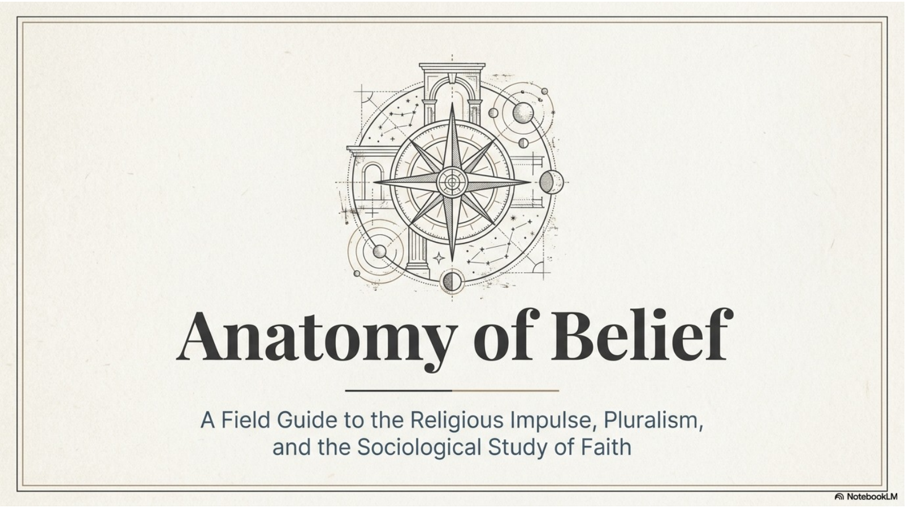
The phrase "Anatomy of Belief" means that the module will take belief apart and look closely at its major parts. The goal is not to prove or disprove any religion. The goal is to understand how religion works in human life: what people believe, how they practise, how communities form, and why religious questions remain powerful even in a scientific and technological age.
A central idea is the religious impulse. This is the deep human urge to reach beyond ordinary material life and ask questions about meaning, purpose, goodness, suffering, death, and what may exist beyond the visible world. Chapter 1 presents this impulse as old, persistent, and widespread across human societies.
The chapter also introduces religious pluralism. In this course, pluralism means more than the fact that many religions exist. It means a positive and respectful attitude toward the existence of many faith traditions in one society. Canada is used as the main setting because many world religions are practised here in everyday community life.
A sociological study of faith asks what religion does in society. It looks at beliefs, rituals, symbols, institutions, ethics, family life, public life, media portrayals, and the ways religion helps people form identity and community. This kind of study requires accuracy, curiosity, and respect.
2. The Psychological Drivers of the Religious Impulse
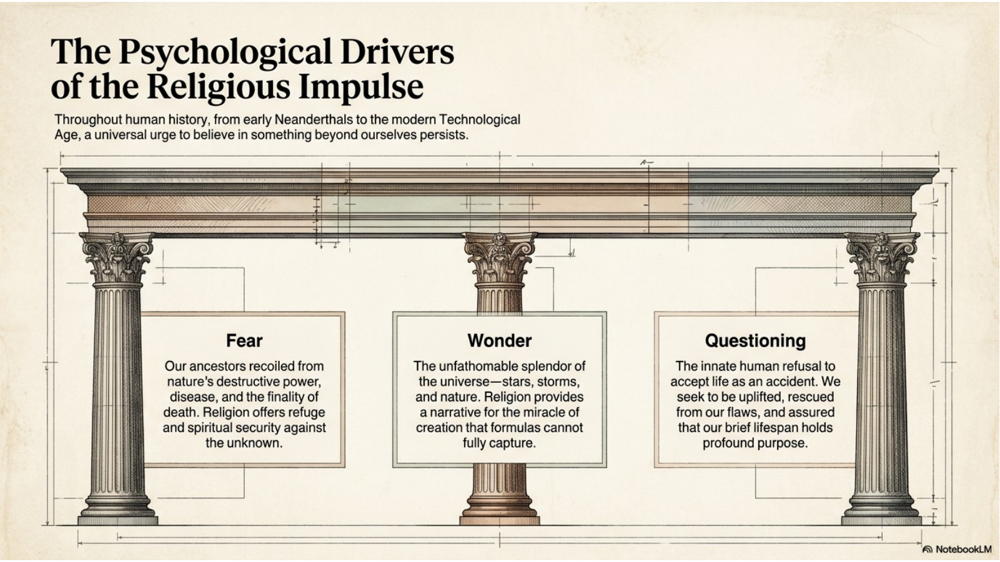
Fear is one reason people turn to religion. Human beings face death, illness, loneliness, guilt, natural disasters, conflict, and the feeling that life may be fragile or unfair. Religion can offer refuge, courage, forgiveness, rituals of comfort, and a community that helps people face suffering and uncertainty.
Wonder is another driver. People look at stars, storms, birth, beauty, nature, and the complexity of life and feel awe. Science can describe many natural processes, but many people still ask what the whole pattern means. Religion often offers a story of creation, order, gratitude, and reverence that goes beyond measurement alone.
Questioning is the refusal to treat life as meaningless accident. People ask: Who am I? Why am I here? How should I live? Is there life after death? Why is there suffering? Does the universe have a purpose? Chapter 1 emphasizes that even technology has not erased these questions.
This section presents fear, wonder, and questioning as three major pathways into religion, but the chapter also points to identity and intuition. Some people sense that they are more than a physical body or social label. Others feel drawn toward a deeper or mystical reality. These experiences can become part of a personal credo, or statement of belief.
Religion should not be reduced only to anxiety or fear. It also gives many people celebration, belonging, moral direction, beauty, gratitude, and hope. The religious impulse is therefore both a response to human limits and a search for meaning beyond those limits.
3. The Shared Architecture of World Religions
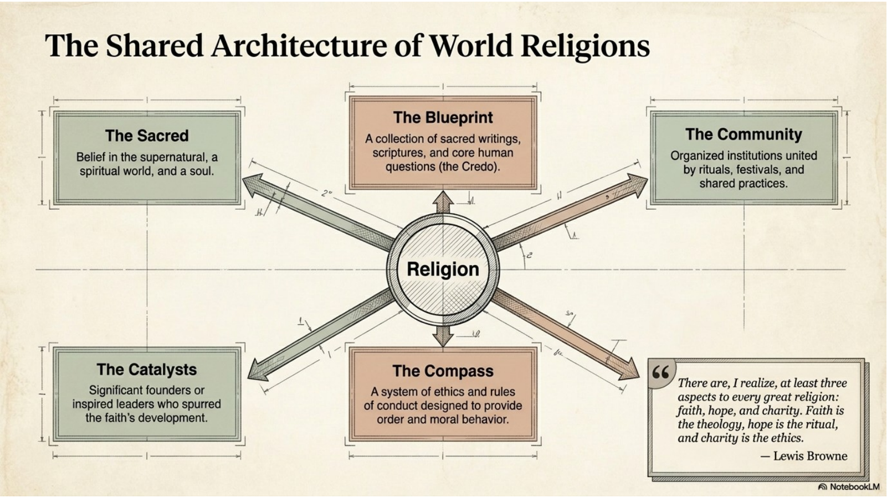
The chapter is careful not to force every religion into one exact definition. Instead, it identifies common features that appear in many religious traditions. These features help readers can recognize patterns while still respecting differences.
Some scholars have tried to summarize those shared patterns in simple language. Lewis Browne suggested that the world's great religions include faith, hope, and charity. This is not a complete definition of religion, but it is a useful reminder that religions often combine belief, a vision of meaning, and an ethical concern for others.
The sacred refers to what is set apart from ordinary life and connected with spiritual or religious meaning. Many religions include belief in a supernatural or spiritual world, a soul, higher powers, sacred realities, or a reality beyond the material world.
The blueprint is the set of beliefs, teachings, sacred writings, stories, and questions that guide a tradition. This can include scriptures, oral traditions, doctrines, origin stories, teachings about salvation or liberation, and explanations of how people should live.
The community is the organized life of a religion. Religions are not only private beliefs; they often include institutions, families, festivals, worship, rituals, and shared practices. These give members a sense of belonging and a way to pass faith from one generation to the next.
The catalysts are the people and events that shape a faith tradition. These can include founders, prophets, teachers, reformers, saints, elders, or inspired leaders whose experiences give direction to the tradition.
The compass is the ethical and practical guidance religion provides. Many religions include rules of conduct, rituals, practices for focusing awareness, and teachings about moral behaviour. A useful way to remember this framework is: religion often involves belief, practice, community, and moral direction.
4. Mapping Perspectives on the Divine
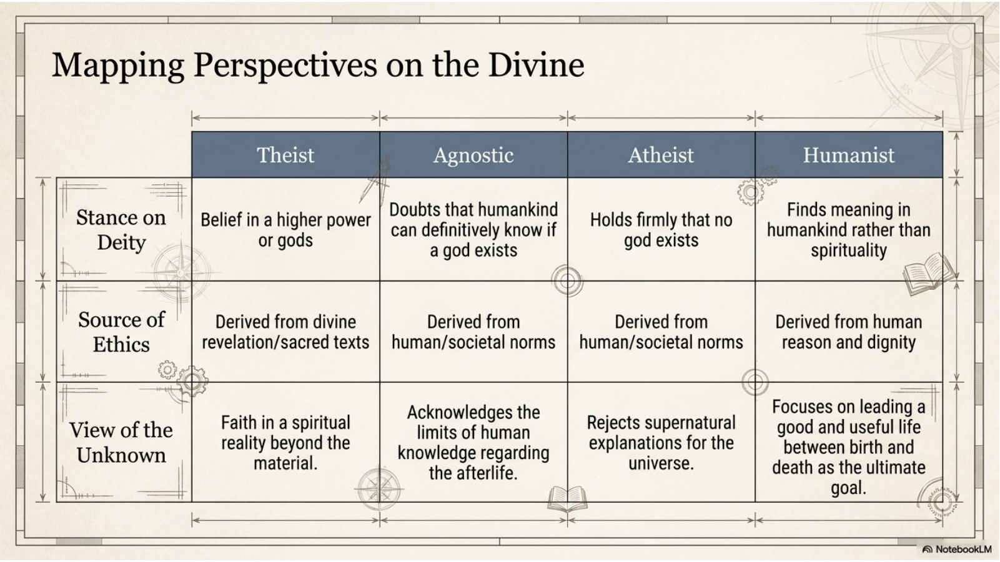
A theist believes in a higher power or god. Some theists believe in one God, while others believe in many gods or divine beings. In many theistic traditions, ethics may be shaped by divine revelation, sacred texts, teachings, and religious community.
An agnostic doubts that human beings can know with certainty whether God or a divine reality exists. Agnosticism is not the same as atheism. It focuses on the limits of human knowledge.
An atheist holds that no god exists. Atheism does not automatically mean a person lacks ethics, meaning, or community. Many atheists base moral choices on human reason, social responsibility, compassion, or philosophy.
A humanist grounds meaning and ethics mainly in human dignity, reason, and responsibility rather than divine revelation. Humanists often emphasize living a good and useful life in the world between birth and death.
This section helps readers avoid stereotypes. In this course, the task is not to rank these positions but to understand them accurately. A respectful reader can explain differences among theist, agnostic, atheist, and humanist without caricaturing any of them.
5. Reconciling the Mechanics and the Meaning
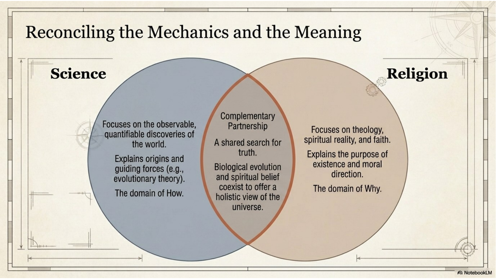
Science focuses on the observable, testable, and measurable features of the natural world. It asks questions about how things work. For example, science studies biological evolution, the age of the earth, diseases, ecosystems, and physical processes.
Religion often asks questions of meaning, purpose, moral direction, and ultimate reality. It asks why life matters, how people should live, what suffering means, and whether there is a spiritual dimension to existence.
The chapter acknowledges that science and religion have sometimes been treated as rivals. Theories such as biological evolution seemed to challenge some literal religious interpretations. However, the chapter also suggests that many people today see science and religion as complementary rather than permanently hostile.
A complementary view does not make science and religion identical. Science cannot answer every moral or spiritual question, and religion is not a substitute for scientific evidence about the natural world. Each has strengths and limits.
A helpful example is evolution. Biological evolution explains a process of change in living things. A religious person might accept that explanation while still asking what human life means, how creation should be valued, or what moral responsibilities humans have toward other living beings.
6. Distinguishing Belief from Conduct and Culture
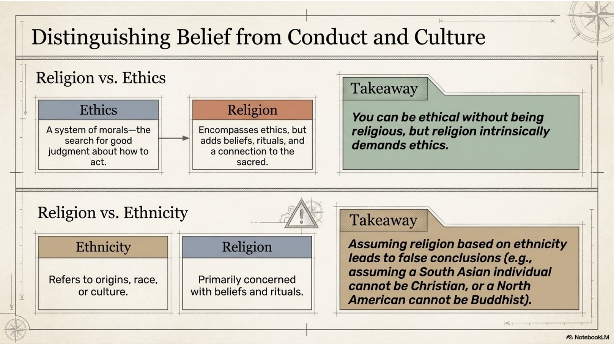
Ethics is a system of morals or rules for human conduct. It is concerned with good judgment, right action, responsibility, and how people should treat one another. Many people think about ethics even if they do not belong to a religion.
Religion often includes ethics, but it is broader than ethics alone. Religion may include sacred stories, beliefs about the divine or spiritual world, worship, ritual, symbols, festivals, community, sacred texts, and practices of prayer or meditation.
A key idea in this module is that a person can be ethical without being religious, but religion intrinsically demands ethics. Most religions teach that belief should shape conduct; followers are expected to live in ways that reflect their faith.
Ethnicity refers to origins, race, ancestry, or culture. Religion refers primarily to beliefs and practices. The chapter warns that ethnicity is not a reliable indicator of a person's religion. People with the same ethnic background may practise different religions or none at all.
For example, there are South Asians who are Christian, North Americans who are Buddhist, and people from any cultural background who may be Muslim, Hindu, Jewish, Sikh, Christian, atheist, agnostic, humanist, or something else. Belief, practice, and self-identification are better indicators than ancestry.
7. The Funhouse Mirror of Popular Culture
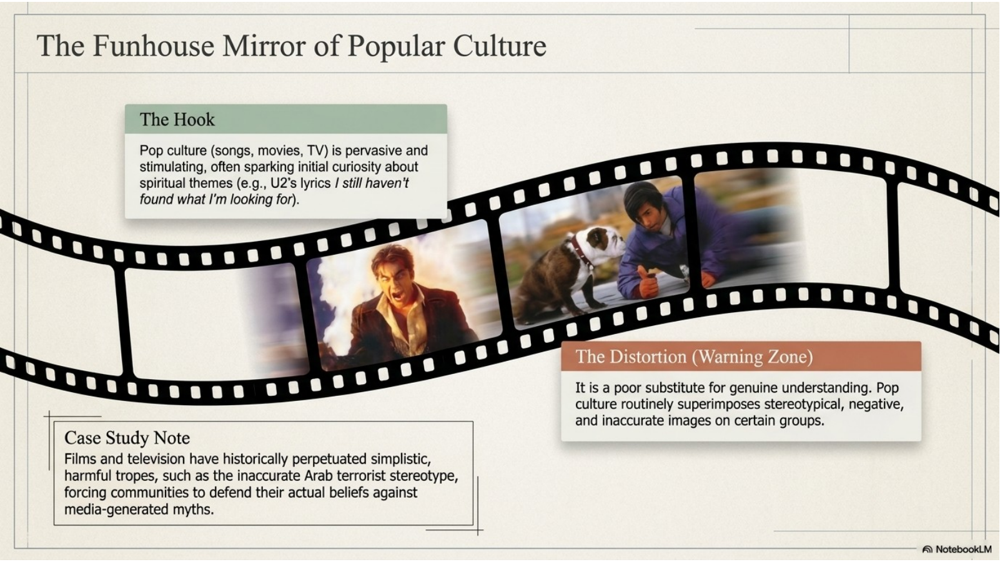
Popular culture includes songs, films, television, social media, video games, advertising, and celebrity culture. It is powerful because it is widely available and emotionally engaging. A song or film can make readers curious about spiritual themes, ethical conflict, good and evil, or the search for meaning.
The chapter uses popular music as one example. Religious or spiritual language in a song can express longing, doubt, belief, hope, or dissatisfaction with ordinary life. Popular culture can therefore be a hook into deeper study.
The danger is that popular culture often simplifies complex traditions for entertainment. It may exaggerate, sensationalize, or stereotype religious people. A repeated stereotype can shape public attitudes even when it is inaccurate.
The chapter gives the example of Muslim communities having to defend themselves against simplistic images such as the "Arab terrorist" stereotype in film and television. This kind of portrayal can replace real understanding with fear and prejudice.
When analyzing religion in popular culture, ask: What religious group or idea is shown? What evidence is used? Is the portrayal respectful, stereotypical, accurate, sensationalized, or mixed? Whose voices are missing? How might a Canadian viewer be influenced by this portrayal? Popular culture can start inquiry, but it should not be the only source.
8. The Sacred and the Secular: A Case Study
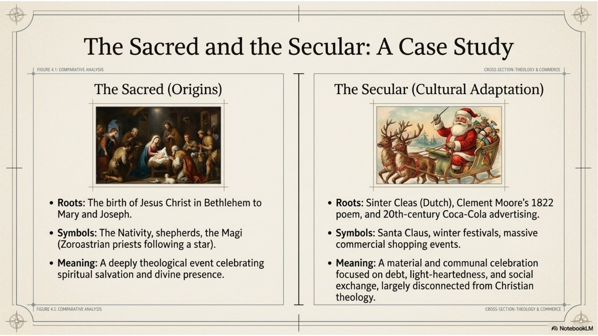
The sacred origins of Christmas are Christian. The celebration centres on the birth of Jesus Christ in Bethlehem to Mary and Joseph. Traditional symbols include the Nativity, shepherds, the Magi, prayer, scripture, church worship, and the theological meaning of divine presence and salvation.
The secular or cultural adaptation of Christmas includes symbols and practices that are not central to Christian theology. This section highlights Santa Claus, winter festivals, commercial shopping, gift exchange, advertising, light-hearted celebration, and social gatherings.
The Santa tradition developed through several cultural layers. The chapter mentions Saint Nicholas, the Dutch Sinter Claes tradition, Clement Moore's nineteenth-century poem, and the later popular advertising image of Santa. These elements became central to North American Christmas culture even though they are not part of the birth of Jesus.
Christmas can raise concerns for both Christians and non-Christians. Some Christians worry that consumerism and Santa-focused imagery hide the sacred meaning of the holy day. Some non-Christians may feel that public celebrations assume Christian norms or pressure everyone into a cultural pattern that is not their own.
This case study matters because it shows how religion and culture interact. A religious celebration can become a national cultural event, and a cultural event can carry religious roots even when many participants do not focus on them. In pluralistic Canada, communities often adapt with interfaith events, Winterfests, or more inclusive language.
9. Religious Pluralism in the Canadian Context
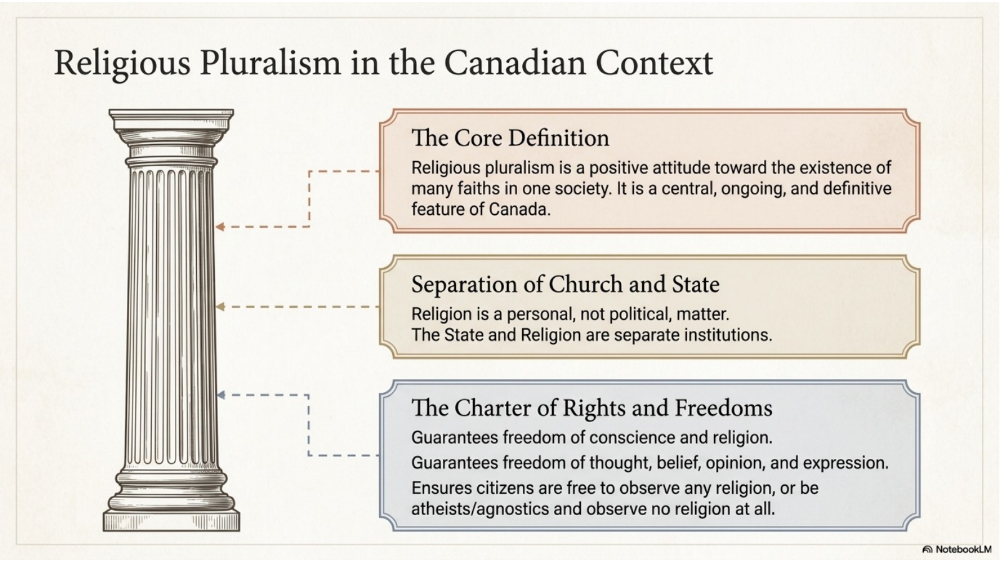
Religious pluralism is a positive attitude toward the existence of many faiths in one society. It includes the practical reality that people of different traditions live together and the civic attitude that those differences deserve respect.
The chapter describes religion and the State in Canada as separate institutions. Religion is treated as a personal matter rather than a government-imposed identity. Canadians are free to follow and celebrate a religious tradition, and they are also free not to observe any religion.
The Canadian Charter of Rights and Freedoms protects freedom of conscience and religion. It also protects freedom of thought, belief, opinion, and expression. Equality rights protect people from discrimination on grounds that include religion.
Religious freedom includes the freedom to be Christian, Muslim, Hindu, Buddhist, Sikh, Jewish, Indigenous spiritual, another tradition, atheist, agnostic, humanist, or none of these. At the same time, freedom is not absolute; Canadian society must also consider public safety, equality, and the rights of others.
The chapter notes that public life sometimes includes interfaith practices. Ceremonies may include representatives from several traditions, and Aboriginal or Indigenous rituals may be present at public events. These practices show how pluralism appears in real civic life.
The chapter also mentions that regular attendance at religious services declined between 1988 and 1998, while some groups were more likely to attend regularly: married couples with children, senior citizens, recent immigrants, and rural Canadians. Possible reasons include community support, long habit, family formation, cultural identity, and religious institutions serving as local community hubs.
10. The Scholar's Toolkit: Evaluating Sources
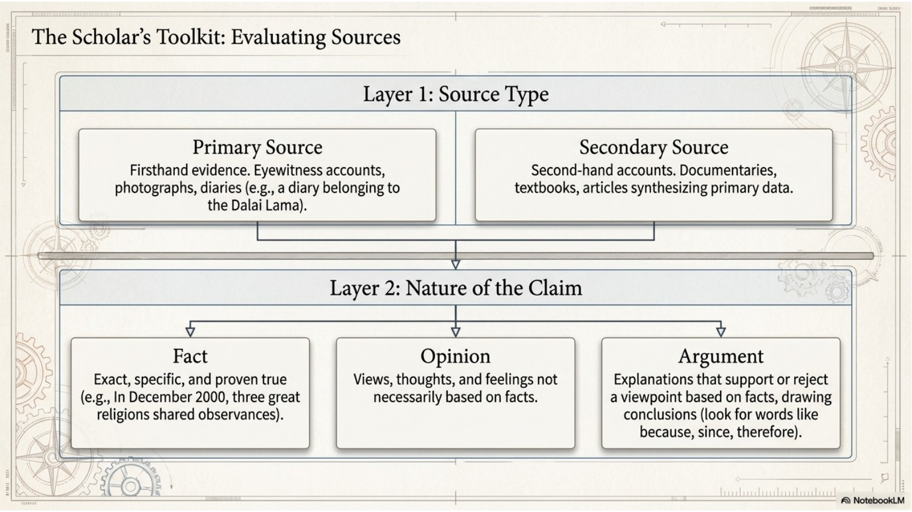
A primary source is firsthand evidence. It comes from someone or something directly connected to the event, person, or tradition being studied. Examples include an interview with a religious leader, a diary, an eyewitness account, a photograph, a video, an artifact, or a passage from a sacred text.
A secondary source is a second-hand account. It interprets, summarizes, analyzes, or explains primary material. Examples include a textbook chapter, encyclopedia entry, documentary, website, article, or book written by someone who is studying the tradition from sources.
Both primary and secondary sources can be useful. A primary source may give direct access to a believer's words or a ritual object. A secondary source may provide context and explanation. Good research often uses both and asks who created the source, when it was created, why it was created, and what evidence it uses.
A fact is a claim that can be checked or verified. For example, a statement about a Charter freedom, a date, a published text, or the existence of a ritual can be tested against evidence.
An opinion is a view, preference, judgment, or feeling. Opinions may be thoughtful, but they are not automatically facts. Words such as best, worst, beautiful, boring, or more meaningful often signal opinion.
An argument is a claim supported by reasons or evidence. Arguments often use words such as because, since, therefore, and as a result. In world religions, an argument should be respectful, evidence-based, and clear about how the evidence supports the conclusion.
11. Diagnosing Bias in Research
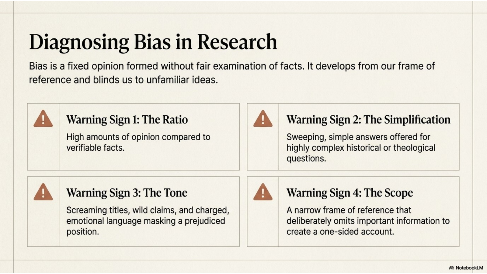
Bias is a fixed or slanted opinion formed without a fair examination of the facts. It can be negative or positive, but either way it limits understanding. The chapter explains that bias grows out of a frame of reference: family, experiences, culture, religion, occupation, media habits, and prior assumptions.
Warning Sign 1 is the ratio of fact to opinion. If a source contains many judgments but very little verifiable evidence, it may be unreliable or one-sided.
Warning Sign 2 is simplification. Religion, culture, history, and identity are complex. Be cautious when a source offers sweeping, simple answers to complicated theological or historical questions.
Warning Sign 3 is tone. Screaming titles, wild claims, insults, fear-based language, and overly emotional wording can hide prejudice or weak evidence. Strong sources can be engaging without manipulating the reader.
Warning Sign 4 is scope. Ask what the source includes and excludes. A source can be biased by leaving out important voices, events, definitions, or counter-evidence. The five Ws - who, what, when, where, and why - can help you identify missing information.
A biased source is not always useless. It may be useful as an example of a perspective. However, readers should not rely on biased sources for balanced explanation. Compare sources, check authorship, separate evidence from conclusions, and watch for your own confirmation bias.
12. A Comparative, Not Competitive Lens
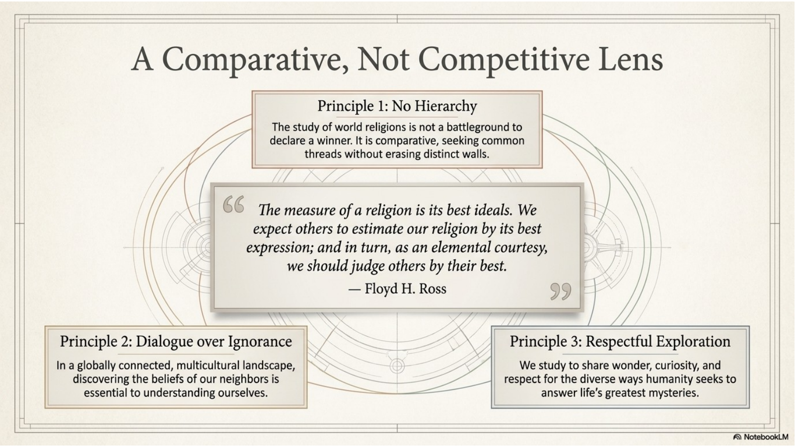
A comparative approach studies similarities, differences, patterns, and distinctive features among religions. It asks how traditions answer big questions, how they organize community life, how they use ritual and symbol, and how they shape moral action.
A competitive approach would try to declare a winner or rank one tradition above another. That is not the method of this course. Readers are not being asked to decide which religion is best. They are being asked to understand religions accurately and respectfully.
The section emphasizes no hierarchy. This means we do not judge a religion only by its failures or by the worst actions done in its name. A fair reader also studies a tradition's best ideals, central teachings, and the lived experiences of its adherents.
Dialogue over ignorance matters in Canada because people of many faiths and worldviews are neighbours, classmates, coworkers, and citizens. Learning about another tradition can reduce fear and also help readers understand their own assumptions more clearly.
Respectful exploration requires humility. Use accurate terms, avoid stereotypes, do not mock sacred practices, distinguish religion from culture and ethnicity, and remember that real communities are more complex than a single image or headline.
Chapter 1 Key Vocabulary
These terms appear throughout Chapter 1 and are important for understanding the module. Readers should be able to explain each term in their own words and use it accurately in context.
| Term | Meaning |
|---|---|
| agnostic | A person who doubts that humans can know whether a god or ultimate spiritual reality exists. |
| atheist | A person who holds that no god exists. |
| bias | A fixed or slanted opinion formed without fair examination of facts. |
| credo | A statement of belief or philosophy. |
| ethics | A system of morals or rules for human conduct. |
| ethnicity | A person's origins, ancestry, race, or culture; not the same as religion. |
| fact | A claim that is exact, specific, and verifiable. |
| humanist | A person who grounds value and meaning mainly in human dignity, reason, and responsibility. |
| multi-faith | Involving many faith traditions. |
| opinion | A view, judgment, preference, or feeling that may or may not be based on facts. |
| argument | A claim supported by reasons or evidence that leads to a conclusion. |
| primary source | Firsthand evidence, such as a diary, interview, artifact, photograph, or sacred text passage. |
| religious impulse | The human urge to seek meaning, worship, or connection with something beyond ordinary material life. |
| religious pluralism | A positive attitude toward the existence of many faiths in one society. |
| ritual | A prescribed religious procedure or performance. |
| sacred | Connected with religion; set apart from ordinary life and treated with special meaning. |
| secondary source | A second-hand explanation or interpretation based on primary material. |
| secular | Concerned with the material or non-religious world. |
| soul | The spiritual or immaterial part of a human being. |
| symbol | A mark, object, image, or action that represents an idea. |
| theist | A person who believes in a god, gods, or higher power. |
| theology | The study of God, religion, or religious belief. |